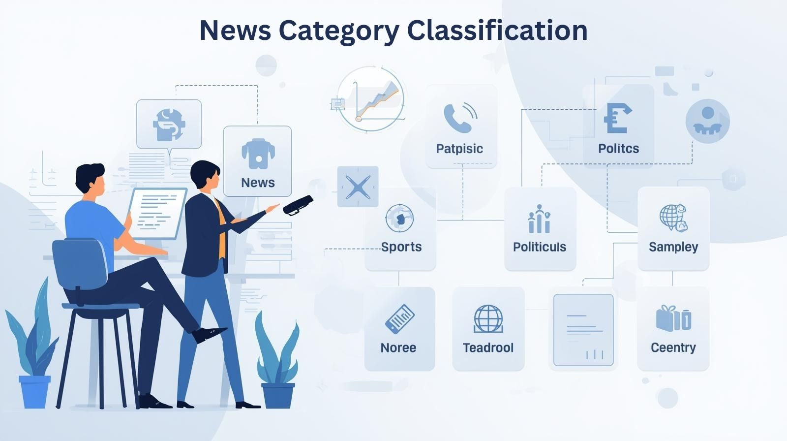
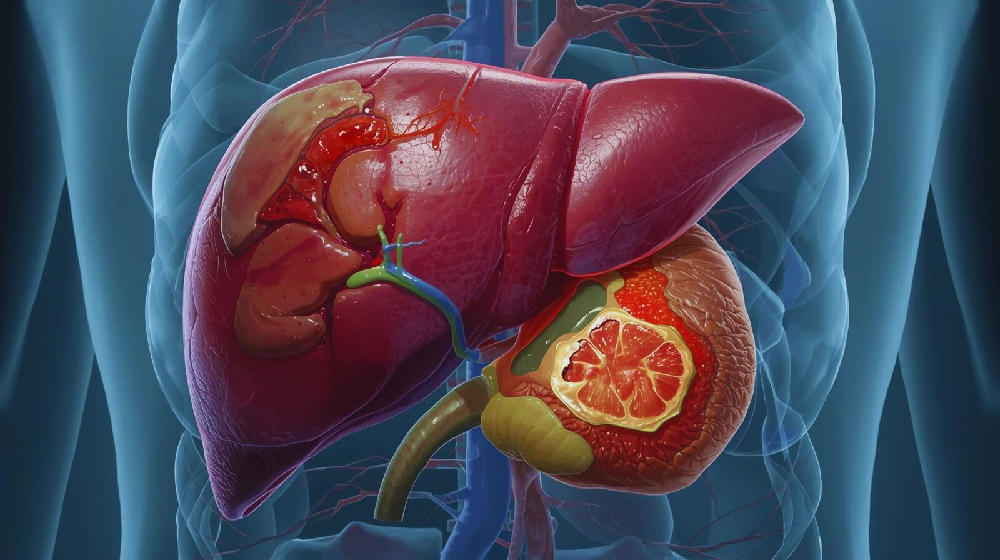

Hi, I'm Nihal Kushwaha
Aspiring Data Scientist | Data Analyst
Passionate about transforming data into actionable insights. Experienced in machine learning, data analysis, and statistical modeling. Let's uncover hidden patterns in your data.
Aspiring Data Scientist
& Insight-Driven Problem Solver
I'm a dedicated data science professional focused on analyzing and interpreting data to uncover meaningful insights. My journey in data science began with a curiosity about how data drives decisions and reveals patterns, and has evolved into a strong interest in applying Python, statistics, machine learning, and data visualization to solve real-world problems.
When I’m not working with datasets, you’ll find me exploring new analytical tools, building data-driven projects, and strengthening my skills in SQL, Power BI, and machine learning techniques. I believe in continuous learning and pushing the boundaries of what’s possible through data-driven thinking and impactful insights.
Download ResumeAcademic Qualifications
Bachelor of Science in Data Science
It's all about using data to solve real-world problems and support better decisions. I chose this field because I enjoy analyzing data, discovering patterns, and turning numbers into insights. My work includes end-to-end machine learning projects using Python, data visualization with Power BI and other analytical technologies.
Technical Expertise
Specialized in data analysis, machine learning, and data visualization technologies
Core Data Science
Machine Learning
Data Visualization
Database & Cloud
Additional Tools & Technologies
Featured Projects
Hands-on data science projects showcasing machine learning, NLP, and data visualization skills

Road Accident Analysis
This Road Accident Analysis dashboard provides a comprehensive overview of accident and casualty trends across multiple dimensions such as year, vehicle type, weather conditions, road type, and area. It highlights key metrics including total accidents, fatalities, and severity levels, while visualizing patterns by month, day of the week, lighting conditions, and road surfaces. The dashboard enables users to identify high-risk factors and accident hotspots, supporting data-driven decisions for road safety improvement and policy planning.

News Category Classification
This project focuses on building a News Category Classification system that automatically classifies news articles into predefined categories using machine learning techniques. By applying text preprocessing, feature extraction, and supervised learning algorithms, the system is able to accurately predict the category of unseen news articles.
Language Detection
n this project, a dataset containing 10,337 text samples across 17 languages was used to build a machine learning model for language detection. The workflow included data preprocessing, feature extraction, model training, and evaluation. A Naive Bayes classifier was chosen due to its efficiency and strong performance in text classification tasks.

Weekly Weather Insights
This Power BI dashboard delivers comprehensive weekly weather insights across selected global cities. It visualizes trends in temperature, humidity, wind speed, air quality, visibility, and sunrise–sunset timings. Interactive visuals enable comparative analysis of weather conditions and pattern detection over time. The dashboard supports data-driven decision-making through clear, intuitive, and dynamic reporting.

Liver Disease Clinical Assessment System
The Liver Disease Clinical Assessment System is an AI‑powered tool that evaluates key clinical parameters such as bilirubin, enzymes, proteins, and albumin ratios. Using Gradient Boosting, it predicts liver disease risk, offering clear results and confidence scores for educational and research purposes only.
Social Media Mental Health Indicators
This dashboard analyzes the impact of social media usage on mental health indicators such as sleep hours, anxiety levels, stress, and overall emotional well-being. It compares daily screen time, negative interactions, and mental states across different platforms and genders, helping to identify patterns that link excessive social media use with increased anxiety and stress levels.

Grammatical Structure Analysis
This project focuses on Part-of-Speech (POS) tagging using Natural Language Processing techniques. It analyzes text data to assign grammatical tags and perform grammatical structure analysis of sentences. The model helps in understanding syntax, word relationships, and overall sentence formation. Built as an academic NLP project with practical implementation and clear results.
Data-Driven Solutions
Data Analysis & Insights
Transform raw data into meaningful insights using exploratory data analysis, statistical techniques, and visual storytelling to support data-driven decisions.
ML Modeling
Design, train, and evaluate machine learning models to solve classification, regression, and prediction problems with real-world datasets.
Predictive Analytics
Data Visualization & Dashboard
Create interactive dashboards and visual reports that clearly communicate insights to both technical and non-technical stakeholders.
Model Deployment & Automation
Deploy machine learning models as web applications using streamlit & GitHub , enabling real-time predictions and scalable solutions.
I'm Open to Work
Currently Available
Ready to start immediately
I'm actively looking for opportunities in data science, machine learning, and analytics roles. Whether it's internships, contract work, or full-time positions, I'm ready to contribute and grow.
Focus Areas
Data Science & ML
• Machine Learning Models
• Data Analysis & Visualization
• Statistical Modeling
• Python & Data Frameworks
Work Type
Flexible Opportunities
• Full-time positions
• Internships
• Freelance projects
• Remote work
Ready to Collaborate?
Let's work together on exciting data science projects. Feel free to reach out with opportunities, questions, or just to say hello!
Get In TouchLet's Connect
Send me a message and I'll respond within 24 hours